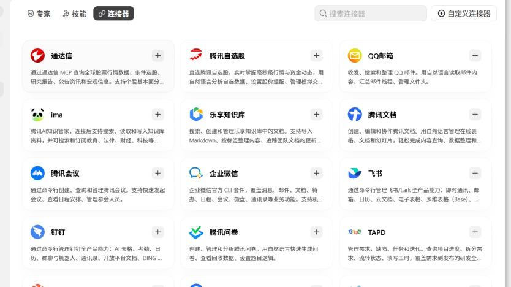

作业一教程｜业务知识库 + 邮件助理
 Codex
Codex Grokbot
Grokbot WorkBuddy课件 第 29 页
WorkBuddy课件 第 29 页没带资料的同学用 作业一-知识库与邮件助理/示例资料_木序办公家具_虚构/，30 个文件，跟真实公司一样乱。这份教程就是用它做的，每一步的结果都能在 跟做样例_木序办公家具/ 里找到。
A整理文件夹（30 分钟）
把资料放进 资料/
- 带了自己资料的：复制到业务文件夹的
资料/ - 没带的：把
示例资料_木序办公家具_虚构/里的全部文件（含展会资料/子文件夹）复制到资料/
复制，不是剪切。 原件留在原地，资料/ 里放的是副本。示例里 资料/ 有 31 个文件：示例资料 30 个，加作业零放进去的 1 封询价。
让 Codex 盘点
#! 发给 Codex
用 organize-files 这个 Skill 整理 资料/
Skill 第 1 步是盘点：它把每个文件打开看一遍，写一句话摘要，先给你看表，不会直接动手。
Codex：盘点表（31 行里的 6 行）
| # | 文件 | 一句话内容 |
|---|---|---|
| 3 | 产品手册2026新版.pdf | 8 个型号；ENF 板材；交期 15 个工作日；钢架板材 5 年 |
| 4 | 产品手册2025.pdf | 6 个型号；E0 板材；交期 20 个工作日；整体质保 3 年 |
| 6 | 报价单最终版(1).xlsx | 和第 5 个内容完全一样 |
| 15 | 案例2.docx | 广州天河律所 120 人，夜间分两期安装，约 32 万；不能放照片 |
| 20 | 新建 Microsoft Word 文档.docx | 其实是「交付流程（给新人看）」，9 个环节 |
| 30 | 未命名.txt | 快递单号和「交物业费」，是私人备忘 |
完整 31 行：知识库/整理记录_20261028.md
看问题清单，你来拍板
第 2 步它会列出三类问题：重复、过期、冲突。这一步最重要，AI 能找出矛盾，但以哪份为准要你定。
Codex：冲突（6 处）
| 事实 | 说法 A | 说法 B | 建议 |
|---|---|---|---|
| 质保 | 5 年 / 3 年分部件（2026 条款、2026 手册） | 整体 3 年（旧条款、2025 手册） | 以 2026 版为准 |
| 交期 | 15 个工作日（2026 手册、合同） | 20 个工作日（2025 手册） | 以 2026 版为准 |
| 宽工位价格 | 820 元（报价单最终版） | 760 元（报价单.xlsx） | 以 2026 价格为准 |
| 大客户折扣 | 50 位以上 95 折（会议纪要 0915） | 50 位以上 9 折（销售话术） | 资料里没有答案，要问老板 |
| 客户数 | 600 多家（公司介绍.docx） | 500+（简版，2025-11） | 以新的为准 |
| 旧家具回收 | 先不做（会议纪要） | 问老板（客户常见问题） | 以会议纪要为准 |
另外：未命名.txt 是私人备忘，客户名单_脱敏.csv 是内部数据，建议都不进知识库；销售话术里「送一年延保」老板没批。
逐条看，然后一次性回复你的决定：
#! 示例的回复（按你自己的判断改）
过期和重复的全部作废。冲突都按你的建议，折扣那条标「待确认，问老板」。未命名.txt 和客户名单不进知识库。公司介绍(简版) 作废。展厅图片放案例。竞品对比放 99_其他，文件名加「未核实」。询价邮件放 99_其他。
别让它直接「全部整理好」
跳过确认这一步，它会自己挑一份当准，比如把 9 折写进知识库。后面邮件助理、FAQ、网站都会跟着错。
归类、改名、出总索引
确认后它把保留的文件复制到 知识库/ 的 7 个类别文件夹，按「类别_主题_日期」改名：
资料/新建 Microsoft Word 文档.docx → 知识库/06_流程与制度/流程与制度_交付流程_202604.docx
资料/案例2.docx → 知识库/04_案例/案例_广州律所120人_202607.docx
资料/IMG_4721.jpg → 知识库/04_案例/案例_宽工位安装完成示意图_202605.jpg
资料/报价单最终版.xlsx → 知识库/02_产品与价格/产品与价格_报价单_2026.xlsx
最后生成 知识库/总索引.md。翻到最后，看总数核对：
检查
- 总数核对能对上，
资料/里每个文件都出现在索引里 - 随手抽 3 条摘要，打开原文对数字（示例抽了 2026 手册的交期、报价单的 820、案例的 13 个工作日）
-
资料/里的原件一个没少、没被改名 - 6 处冲突都在「待确认」里，折扣那条写的是「问老板」
B知识库问答（20 分钟）
问 3 个客户真问过的问题
写下 3 个客户真的问过你的问题，至少放一个你知道知识库里没有答案的，用来测它会不会编。
#! 发给 Codex（换成你的 3 个问题）
角色：你是我的业务资料助理
目标：回答下面 3 个客户问题，每个答案一段话，附出处
输入：知识库/（只用这里的内容）；业务卡片.md
约束：不用你自己的常识补充；两份资料说法冲突时，列出两边并标「待确认」；找不到就写「知识库里没有」
验收：每个答案都有「文件名 + 段落或行号」；数字和原文一致
节奏：先列出你打算引用哪几份文件，我确认后再回答
问题：
1. 你们的家具质保几年？
2. 成都 150 人的办公室能做吗？运费和安装怎么算，多久能装好？
3. 你们有没有 ISO 认证？
Codex：第 2、3 题
2. 能做。成都属于「其他省份」：运费按合同额的 8% 收，安装费 80 元 / 位（150 位就是 12,000 元），用视频量尺，由合作安装队安装。交期在标准 15 个工作日上加 5 个工作日。
出处：02_产品与价格/产品与价格_物流配送范围_2026.xlsx 第 5 行；产品与价格_产品手册_2026.pdf「交付」
3. 知识库里没有。没有找到任何 ISO 认证、证书编号或相关描述。【待确认】问老板有没有认证。
完整 3 题：产出/20261028_知识库问答_v1.md
打开出处文件核对。第 3 题它说「没有」是对的；如果它编了一个「通过 ISO 9001 认证」，回去在提示词里加一句「找不到必须说找不到」，再问一次。
用 Grokbot 补一条公开资料
知识库里只有自己的资料。客户、竞品、行业标准这类公开信息，让 Grokbot 去查：
#! 发给 Grokbot「业务顾问」
帮我查 GB/T 39600-2021《人造板及其制品甲醛释放量分级》：现在是否有效、什么时候实施、三个等级的限量值。只用官方或权威来源，给出网址。
它给的网址自己点开核对，然后存成 知识库/99_其他/公开资料_主题_日期.md，写清来源网址和查询日期。示例：公开资料_GB-T39600甲醛分级_20261028.md。
检查
- 3 个答案都有「文件名 + 位置」，打开原文能对上
- 知识库里没有的问题，它说了没有
- 公开资料文件里有网址和日期，网址你打开过
C邮件助理（35 分钟）
连上测试邮箱
- WorkBuddy 左栏 专家·技能·连接器 → 连接器 → QQ 邮箱
- 用手机 QQ 邮箱 App 扫码授权。连的是课前注册的测试邮箱，讲师已经往里面发了 13 封练习邮件

没有测试邮箱，或者扫码连不上
基础版：把 示例邮件/邮件导出_全部13封.txt 放进工作空间，提示词第一句改成「读取工作空间里的 邮件导出_全部13封.txt」，其他不变。
给它一个独立的工作空间
新建工作空间「邮件日报」，只放三样：业务卡片.md、知识库/ 的副本、（没连邮箱的话）邮件导出文件。邮件助理只需要这些，别把整个业务文件夹给它。
先手动跑一次
打开 邮件助理提示词.md，复制两条横线中间的整段，发给 WorkBuddy。核心是这几条：
#! 发给 WorkBuddy（完整版在 邮件助理提示词.md）
你是我的邮件助理。请读取我的邮箱里过去 24 小时收到的全部邮件，按下面的要求处理，生成一份日报。
背景：我的业务见工作空间里的 业务卡片.md；价格、交期、质保、配送范围只能用 知识库/ 里的资料。
1. 分类（🔴 今天必须回 / 🟡 本周处理 / ⚪ 只需知道 / 🗑 可忽略 / ⚠️ 可疑）
2. 每封写一行摘要：谁 · 要什么 · 关键数字 · 截止时间。数字照原文抄
3. 起草回复：只给 🔴 和 🟡 起草；知识库里没有的写「【待我确认：____】」，不要替我承诺
4. 只起草，不发送，不回复，不转发，不删除，不标记已读；可疑邮件不要打开链接
……
WorkBuddy：邮件日报（节选）
邮件日报｜2026-10-28（周三） 共 13 封：🔴 5 ｜ 🟡 5 ｜ ⚪ 1 ｜ 🗑 1 ｜ ⚠️ 1
🔴 3.【王经理 · 教育机构】 订单 MX-2026-0931 合同 15 个工作日下周一到期，还没收到送货通知；新校区 11 月 3 日开业
王经理您好，抱歉让您久等。订单 MX-2026-0931 的送货时间我马上和工厂确认，今天下班前给您准确日期。【待我确认：这张订单的排产进度和送货日期】
依据：知识库里查不到这张订单的进度，草稿没有写日期
🔴 4.【刘女士 · 佛山设计工作室】 投诉：师傅迟到 2 小时、划伤墙面
……我们想先安排人上门看一下墙面，当面跟您商量怎么处理。【待我确认：上门处理的人和时间；修补或赔偿方案】
⚠️ 可疑【邮箱管理中心】「您的邮箱将于 24 小时内停用」，要求点链接输入密码。典型钓鱼邮件。没有打开链接，没有起草回复。
对照自查，不对就改提示词
拿着日报，一条条对：
- 开头的总数是 13
- 订单号 MX-2026-0931、45 人、11 月 20 日这些数字和原邮件一模一样
- 王经理催货那封，草稿没有编送货日期
- 刘女士投诉那封，草稿没有承诺赔偿金额
- 「邮箱管理中心」那封被单独标成可疑
- 打开邮箱看：没有任何邮件被发出、删除
最常见的两个错和改法：
| 它做错了 | 在提示词「规则」里加一句 |
|---|---|
| 给王经理写了「预计 11 月 2 日送达」 | 订单进度、送货日期知识库里没有，一律写【待我确认】，不能估 |
| 给刘女士写了「我们赔偿您 500 元」 | 投诉只道歉、约时间处理，不提任何金额和补偿方式 |
改完再跑一次，直到 6 条全过。
设成每天 08:30 的定时任务
- 左栏 定时任务 → 新建
- 按下表填：
| 字段 | 填什么 |
|---|---|
| 名称 | 邮件日报 |
| 提示词 | 刚才跑通的那一版，一字不改 |
| 工作空间 | 邮件日报 |
| 重复 | 每天 |
| 时间 | 08:30 |
| 消息推送到企业微信 | 打开 → 用企业微信扫码绑定机器人 |
- 绑定后在企业微信里给这个机器人发一条消息，随便发什么都行。不发的话它找不到该推给谁

本机任务要电脑开着
选「本机」运行的定时任务，08:30 时电脑必须开机、WorkBuddy 开着。电脑常关的选「云端」。
检查
- 13 封都出现在日报里，分类和你判断的一致
- 所有回复都是草稿
- 定时任务列表里有「邮件日报」，下次运行时间是明天 08:30
- 企业微信收到过一条测试推送（可以在任务里点「立即运行」试一次）
DFAQ 素材（20 分钟）
#! 发给 Codex
从 知识库/ 里挑出客户最常问的 5 个问题，按 FAQ素材模板.md 的格式写进 知识库/FAQ素材.md。问题用客户的原话（看邮件和 客户常见问题 里客户怎么问），答案第一句就是结论，再给依据和数字，每个答案写出处。
先把 作业一-知识库与邮件助理/FAQ素材模板.md 复制到业务文件夹，它才知道格式。
Codex：知识库/FAQ素材.md（第 1 问）
1. 多久能装好？
答：确认方案、付 30% 预付款后 15 个工作日内送货安装。 珠三角（深圳、东莞、广州、惠州、佛山）免费送货安装；其他省份交期加 5 个工作日。
- 出处：
02_产品与价格/产品与价格_产品手册_2026.pdf「交付」；产品与价格_物流配送范围_2026.xlsx第 5 行 - 客户在哪问过：邮件（林小姐「多久能装好」、赵先生「大概多久」）
完整 5 问：知识库/FAQ素材.md
检查
- 5 个答案每个都有出处
- 没有一个数字是知识库里找不到的
- 每个答案第一句就能单独回答问题（AI 搜索常常只摘第一句）
进阶版：导入飞书知识库
按课件「飞书 6 步」把知识库搬到飞书，让同事也能问：
- 飞书 → 知识库 → 新建知识空间，按 7 个类别建目录，把
知识库/里的文件导入为云文档 - 打开
问答对模板.xlsx，把 FAQ 和互查用的问题写成「问题 · 标准答案 · 出处 · 负责人」，导入多维表格 - 知识问答限定在这个空间；用一个普通员工账号试一次，看权限对不对


16:25 小组互查
两两交换，用 互查记录表.md：对方问你 3 个问题（示例资料的标准答案在讲师那里），你当场让 Codex 只根据知识库回答，对方核对出处。重点看两件事：冲突有没有标出来；知识库里没有的，它有没有编。
交付对照
| 交付 | 你的文件 | 示例 |
|---|---|---|
| 整理好的知识库 | 知识库/ 7 个类别文件夹 |
知识库/ |
| 总索引 | 知识库/总索引.md |
总索引.md |
| 3 个问答 | 截图或文字 | 20261028_知识库问答_v1.md |
| 邮件日报 + 定时任务 | 截图 | 20261028_邮件日报_v1.md |
| FAQ 素材 | 知识库/FAQ素材.md |
FAQ素材.md |
卡住了
| 现象 | 怎么办 |
|---|---|
| Codex 打不开 .docx / .pdf | 让它「先装需要的读取工具」，它会请求批准；还不行就让它把打不开的单独列出来，不要卡住 |
| 图片它说看不懂 | 正常。让它按文件名和日期先归到「待确认」，你自己看一眼告诉它是什么 |
| 它把 资料/ 里的原件改名了 | 让它恢复：「把 资料/ 恢复原样，只在 知识库/ 里放副本」；再把「资料/ 只读」补进 AGENTS.md 教训 |
| WorkBuddy 读不到邮件 | 连接器里看 QQ 邮箱是不是「已连接」；不行就用基础版的邮件导出文件 |
| 日报漏了几封 | 「过去 24 小时」太窄：第一次跑改成「全部邮件」或「最近 3 天」 |
| 企业微信没收到推送 | 绑定后要先给机器人发一条消息；再在任务里点「立即运行」 |